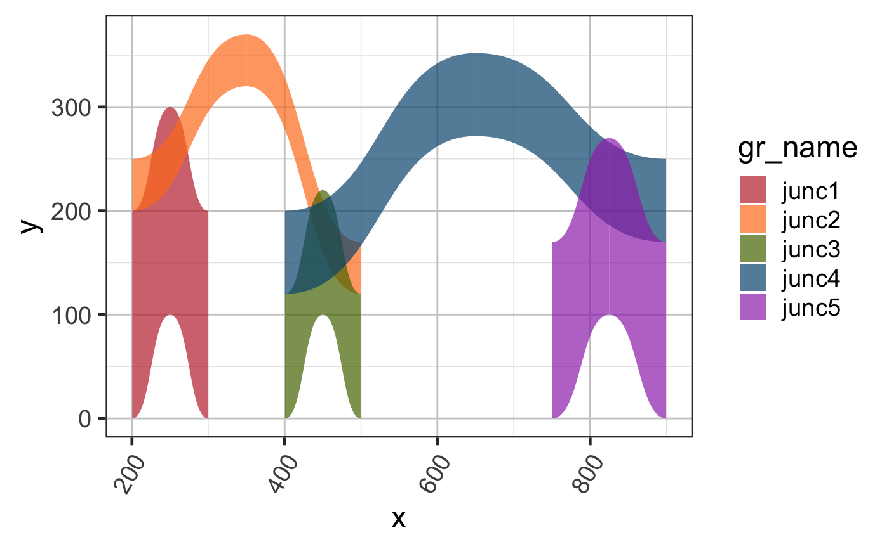

Sample junction data GRangesList
test_junc_gr
GRangesList where each GRangesList item represents a distinct biological sample. Each GRanges item represents one splice junction, whose score represents the abundance of splice junction reads observed. The start of each splice junction should be one base after the end of the corresponding exon, using 1-based coordinates. Therefore, an exon spanning 1-10 covers 10 bases, the corresponding junction would begin at position 11. Similarly, if the connected exon begins at position 100, the junction would end at position 99.
This dataset contains RNA-seq splice junction data stored as a GRangesList.
Other splicejam data:
test_cov_gr,
test_cov_wide_gr,
test_exon_gr,
test_exon_wide_gr,
test_junc_wide_gr
# The code below is used to create the junction test data suppressPackageStartupMessages(library(GenomicRanges)); suppressPackageStartupMessages(library(ggplot2)); test_junc_gr <- GRanges(seqnames=rep("chr1", 5), ranges=IRanges::IRanges( start=c(200, 200, 400, 400, 750), end=c(299, 499, 499, 899, 899)), strand=rep("+", 5), score=c(200, 50, 120, 80, 170), sample_id=rep("sample_A", 5)); names(test_junc_gr) <- jamba::makeNames( rep("junc", length(test_junc_gr)), suffix=""); test_junc_gr;#> GRanges object with 5 ranges and 2 metadata columns: #> seqnames ranges strand | score sample_id #> <Rle> <IRanges> <Rle> | <numeric> <character> #> junc1 chr1 200-299 + | 200 sample_A #> junc2 chr1 200-499 + | 50 sample_A #> junc3 chr1 400-499 + | 120 sample_A #> junc4 chr1 400-899 + | 80 sample_A #> junc5 chr1 750-899 + | 170 sample_A #> ------- #> seqinfo: 1 sequence from an unspecified genome; no seqlengths# To plot junctions, use grl2df(..., shape="junction") junc_df <-grl2df(test_junc_gr, shape="junction") gg1 <- ggplot(junc_df, aes(x=x, y=y, group=id, fill=gr_name)) + ggforce::geom_diagonal_wide(alpha=0.7) + colorjam::theme_jam() + colorjam::scale_fill_jam() print(gg1);